(DIGIDAW // COMPREHENSIVE DATA MATRIX)
POETS &
CANON MATRIX.
A COMPARATIVE ARCHITECTURAL DATA GRID OF 10 CANONICAL POETS, PHILOSOPHERS, AND NOVELISTS ACROSS 8 CENTURIES.
ENTRIES: 18 CATALOGED
FORMAT: EXPANDED DIRECTORY
CAT. 01
INDONESIAN LYRIC
2 MASTERS
CAT. 02
SUFI MYSTICISM
1 TITAN
CAT. 03
SYMBOLIST & CONFESS.
3 POETS
CAT. 04
PROSE & LABYRINTH
4 AUTHORS
QUERY:
| ID | FIGURE & PORTRAIT | ERA / ORIGIN | PRIMARY CATEGORY | CANONICAL BOOK / WORK | CORE LITERARY MOTIF | STATUS |
|---|---|---|---|---|---|---|
| #01 |

SAPARDI DJOKO DAMONO
Indonesian Lyric Poet
|
1940—2020 (Solo / Jakarta) | PUISI LIRIK INDONESIA |
Hujan Bulan Juni (1994) Duka-Mu Abadi (1969) |
Subtle metaphors of rain, flowers, mortality, and simple, profound love unspoken. | BENCHMARK POET |
| #02 |

JALALUDDIN RUMI
Sufi Mystic & Poet
|
1207—1273 (Balkh / Konya) | SUFI MYSTICISM |
The Masnavi (1258) Divan-e Shams (1247) |
The soul's ecstatic longing for union with the Divine; turning grief into incandescent spiritual love. | UNIVERSAL MYSTIC |
| #03 |

CHAIRIL ANWAR
Pioneer of Angkatan 45
|
1922—1949 (Medan / Jakarta) | VITALIST MODERNISM |
Aku (Binatang Jalang) (1943) Deru Campur Debu (1949) |
Raw individual vitality, unyielding defiance against colonial oppression, living for "seribu tahun lagi". | PELOPOR ANGKATAN 45 |
| #04 |

FRANZ KAFKA
Modernist Novelist
|
1883—1924 (Prague, Bohemia) | SURREALIST PROSE |
The Metamorphosis (1915) The Trial (1925) |
Incomprehensible bureaucratic systems, familial guilt, modern bodily and social alienation. | FOUNDATIONAL CANON |
| #05 |

CHARLES BAUDELAIRE
Symbolist Poet & Critic
|
1821—1867 (Paris, France) | DECADENT POETRY |
Les Fleurs du mal (1857) Paris Spleen (1869) |
Urban melancholy, spleen and ideal, extracting beauty from decay, spiritual revolt. | FATHER OF MODERN VERSE |
| #06 |
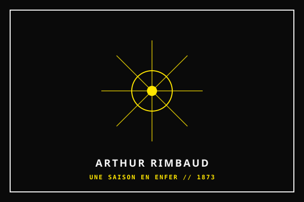
ARTHUR RIMBAUD
Visionary Symbolist
|
1854—1891 (France / Ethiopia) | VISIONARY SYMBOLISM |
A Season in Hell (1873) Illuminations (1886) |
The poet as seer (voyant) via the reasoned derangement of all the senses; prose poetry. | POÈTE MAUDIT |
| #07 |

SYLVIA PLATH
Confessional Poet
|
1932—1963 (Boston / London) | CONFESSIONAL VERSE |
Ariel (1965) The Bell Jar (1963) |
Unsparing emotional ferocity, self-immolation and resurrection, psychic trauma. | PULITZER PRIZE 1982 |
| #08 |
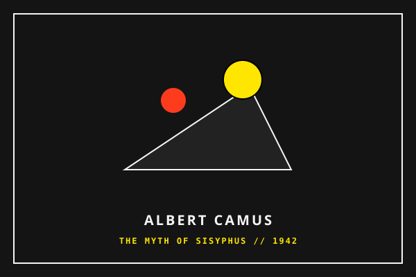
ALBERT CAMUS
Novelist & Essayist
|
1913—1960 (Algeria / Paris) | ABSURDIST ESSAY |
The Stranger (1942) The Myth of Sisyphus (1942) |
The silence of the cosmos, lucid rebellion without suicide, defiance of illusions. | NOBEL LAUREATE 1957 |
| #09 |

FYODOR DOSTOEVSKY
Psychological Novelist
|
1821—1881 (Moscow / St. Petersburg) | PSYCH REALISM |
Crime and Punishment (1866) The Brothers Karamazov (1880) |
Transgression of moral boundaries, feverish guilt, utilitarian folly vs. the soul. | LITERARY TITAN |
| #10 |
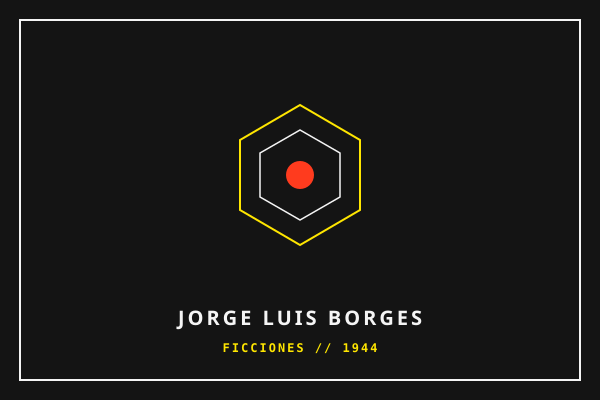
JORGE LUIS BORGES
Short Story Master & Poet
|
1899—1986 (Buenos Aires / Geneva) | PHILOSOPHICAL LABYRINTH |
Ficciones (1944) The Aleph (1949) |
Infinite libraries, mirrors, labyrinths, cyclical time, the metaphysics of the written word. | FORMENTOR PRIZE 1961 |
| #11 |
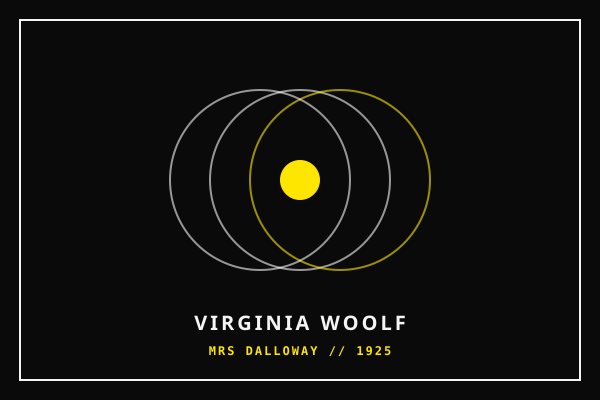
VIRGINIA WOOLF
Modernist Novelist
|
1882—1941 (London / Sussex) | STREAM OF CONSCIOUSNESS |
Mrs Dalloway (1925) To the Lighthouse (1927) |
Fluid interior time, the moment of being, feminist architecture of thought. | MODERNIST PIONEER |
| #12 |
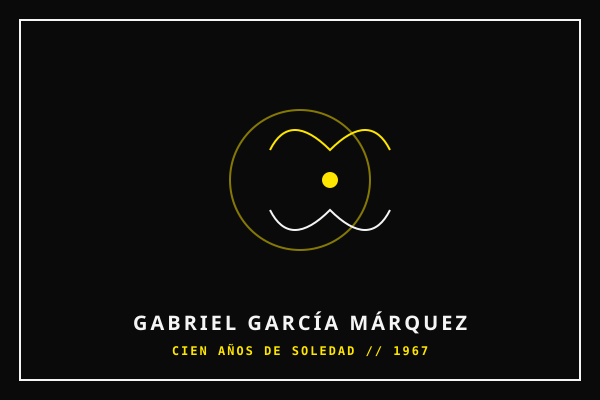
GABRIEL GARCÍA MÁRQUEZ
Magical Realist Novelist
|
1927—2014 (Aracataca / Mexico City) | MAGICAL REALISM |
One Hundred Years of Solitude (1967) Love in the Time of Cholera (1985) |
The fantastic woven into daily history, solitude, love, and the cyclical fate of Macondo. | NOBEL LAUREATE 1982 |
| #13 |
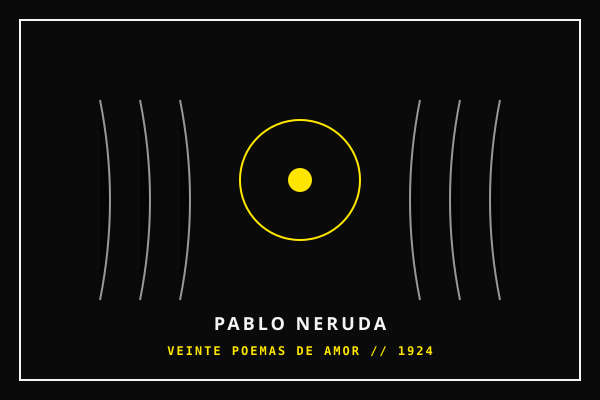
PABLO NERUDA
Chilean Poet & Diplomat
|
1904—1973 (Parral / Santiago) | NERUDIAN ODE |
Twenty Love Poems and a Song of Despair (1924) Canto General (1950) |
Sensuous earth, political commitment, the ordinary object exalted into epic. | NOBEL LAUREATE 1971 |
| #14 |
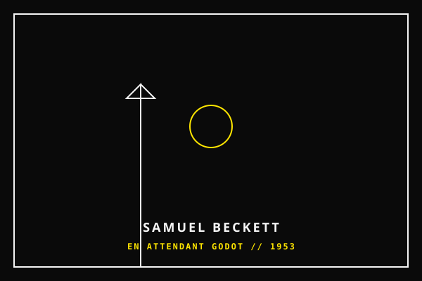
SAMUEL BECKETT
Absurdist Playwright & Novelist
|
1906—1989 (Dublin / Paris) | THEATRE OF THE ABSURD |
Waiting for Godot (1953) Molloy (1951) |
The void, repetition, failure as dignity, language reduced to its barest pulse. | NOBEL LAUREATE 1969 |
| #15 |
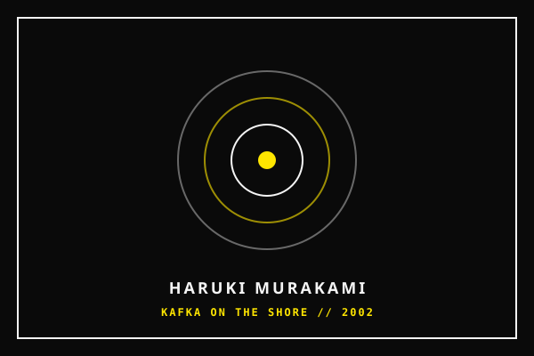
HARUKI MURAKAMI
Contemporary Novelist
|
1949— (Kyoto / Tokyo) | CONTEMPORARY PROSE |
Kafka on the Shore (2002) Norwegian Wood (1987) |
Cats, jazz, parallel worlds, loneliness, and the quiet surrealism of the everyday. | WORLD LITERATURE |
| #16 |
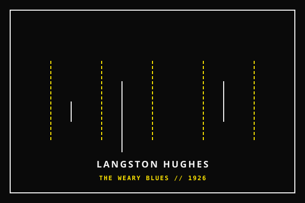
LANGSTON HUGHES
Harlem Renaissance Poet
|
1901—1967 (Joplin / New York) | JAZZ POETRY |
The Weary Blues (1926) Montage of a Dream Deferred (1951) |
The music of the streets, Black American life, dreams deferred and resilience. | HARLEM RENAISSANCE |
| #17 |
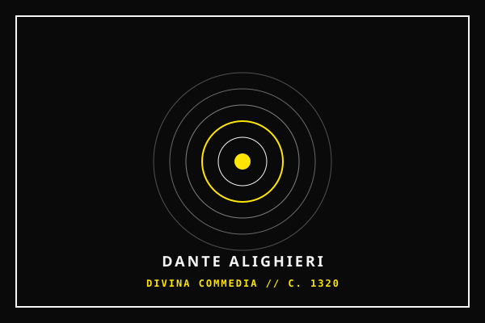
DANTE ALIGHIERI
Medieval Poet & Philosopher
|
1265—1321 (Florence / Ravenna) | DIVINE COMEDY |
Divine Comedy (c. 1320) La Vita Nuova (c. 1294) |
The afterlife as architecture, love as divine force, the Italian vernacular elevated. | FATHER OF ITALIAN |
| #18 |
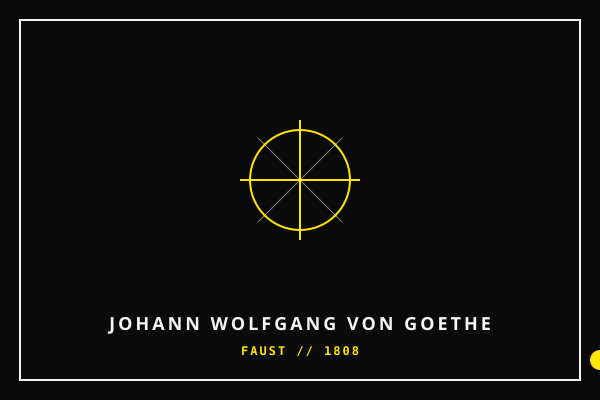
JOHANN WOLFGANG VON GOETHE
German Poet & Polymath
|
1749—1832 (Frankfurt / Weimar) | WEIMAR CLASSICISM |
Faust (1808) The Sorrows of Young Werther (1774) |
The striving soul, humanism, the unity of art and science across a long life. | GERMAN PARNASSUS |